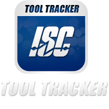
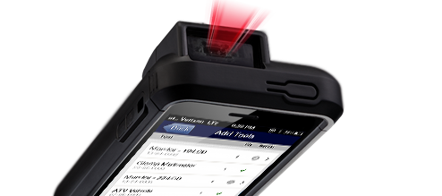
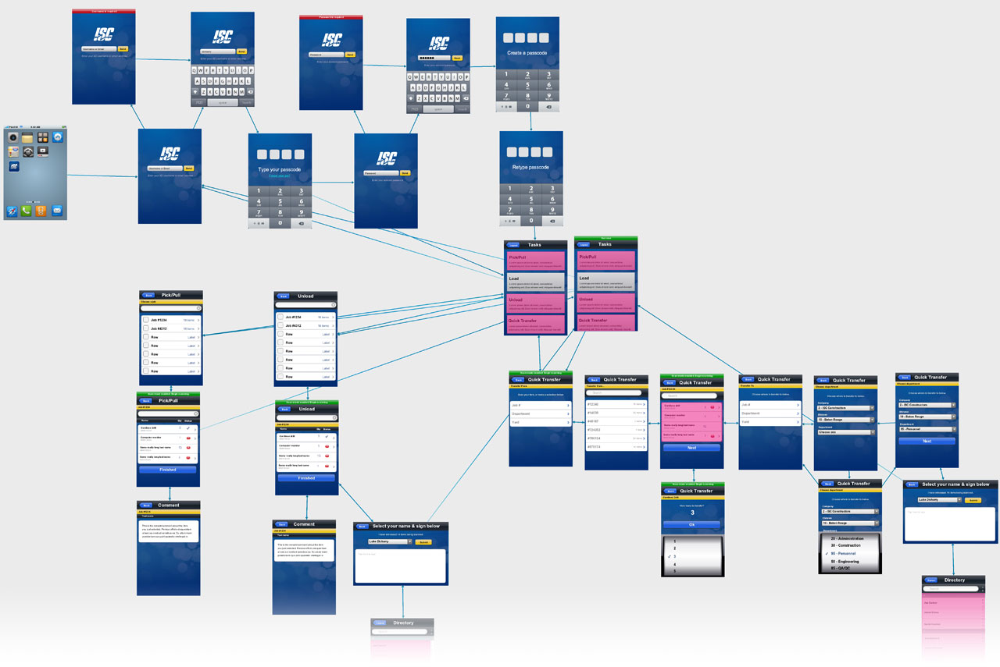
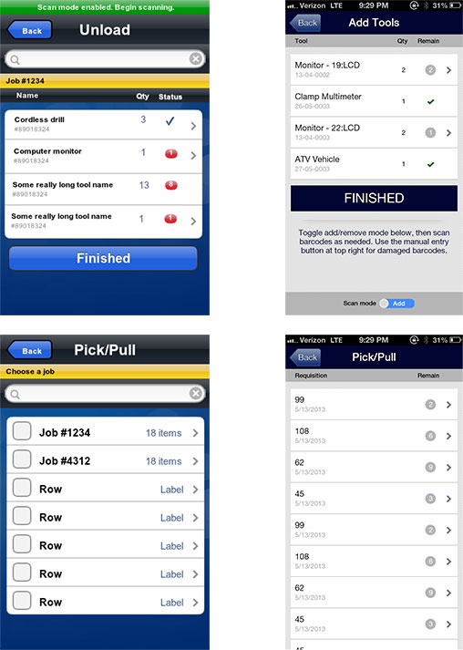
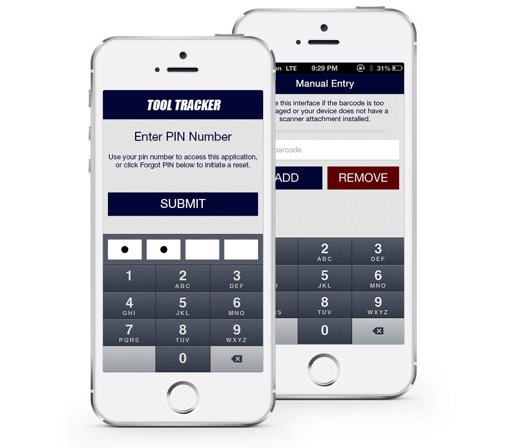
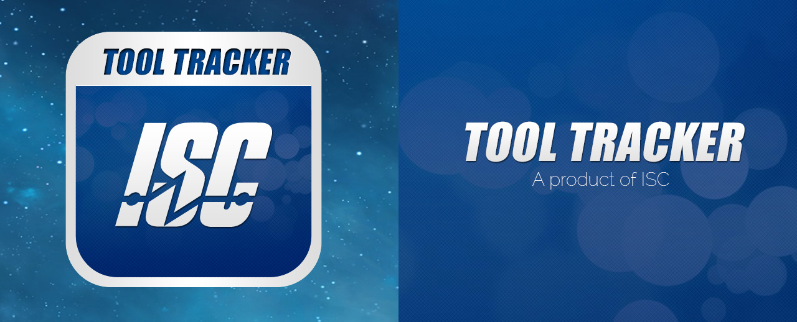
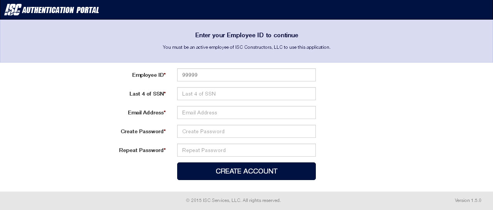
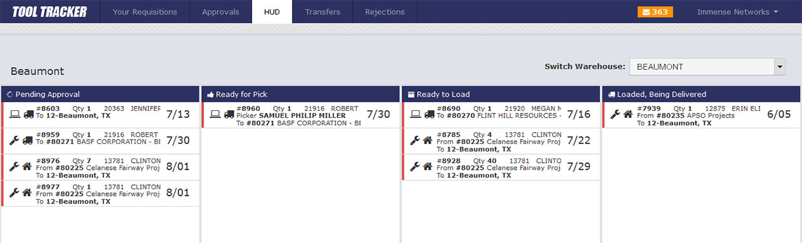
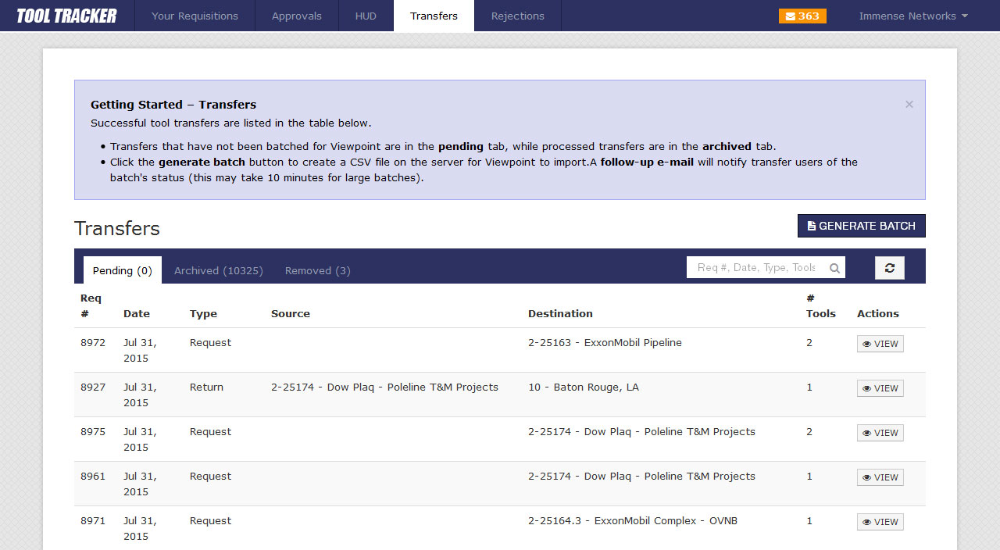

<!DOCTYPE html><html><head><meta charset=UTF-8 /><meta content="IE=edge,chrome=1" http-equiv=X-UA-Compatible /><meta content="width=device-width" name=viewport /><script>var host = "hellojason.net";
if ((host == window.location.host) && (window.location.protocol != "https:"))
  window.location.protocol = "https";</script><meta content="index,follow" name=robots /><link href="../../apple-touch-icon.png?v=Gvm449pRYq" rel=apple-touch-icon sizes=180x180 /><link href="../../favicon-32x32.png?v=Gvm449pRYq" rel=icon sizes=32x32 type="image/png"/><link href="../../favicon-16x16.png?v=Gvm449pRYq" rel=icon sizes=16x16 type="image/png"/><link href="/site.webmanifest?v=Gvm449pRYq" rel=manifest /><link color="#a432f4" href="../../safari-pinned-tab.svg?v=Gvm449pRYq" rel=mask-icon /><link href="../../favicon.ico?v=Gvm449pRYq" rel="shortcut icon"/><meta content="#a432f4" name=msapplication-TileColor /><meta content="#ffffff" name=theme-color /> <title>Hello Jason / Tool Tracker</title><meta content="Tool Tracker is a cooperative website and iOS application that helps ISC Constructors track equipment for jobsites and invoice clients accordingly." name=description /><link href="../../assets/stylesheets/site-64105e90.css" rel=stylesheet /><link href="https://hellojason.net//projects/tool-tracker/" rel=canonical /><script>(function(i,s,o,g,r,a,m){i['GoogleAnalyticsObject']=r;i[r]=i[r]||function(){
(i[r].q=i[r].q||[]).push(arguments)},i[r].l=1*new Date();a=s.createElement(o),
m=s.getElementsByTagName(o)[0];a.async=1;a.src=g;m.parentNode.insertBefore(a,m)
})(window,document,'script','//www.google-analytics.com/analytics.js','ga');

ga('create', 'UA-48926813-1', 'auto');
ga('send', 'pageview');
ga('set', 'anonymizeIp', true);</script></head><body class="projects projects_tool-tracker projects_tool-tracker_index case-study"></body><header class=banner role=banner><div id=primary-navigation role=navigation><div class=navbar-header><a class=logo href="/" title="Hello Jason Portfolio"><svg id=hellojason-logo xmlns="http://www.w3.org/2000/svg" width="0.56in" height="0.56in" viewBox="0 0 40.6 40.6"><defs><style>.cls-1{fill:#fbac2d;}</style></defs><title>hello-jason-logo</title><path class=cls-1 d="M9.3,13.1a4.11,4.11,0,0,1,2.8-.7H29.9a4.42,4.42,0,0,1,2.9.7,3.39,3.39,0,0,1,.8,2.5v0.5H28.4A1.43,1.43,0,0,0,27,17.5v0.9q3.75,0,4.8.9c0.7,0.6.9,2.9,0.9,2.9a28.1,28.1,0,0,1,.1,2.9V29a1.43,1.43,0,0,1-1.4,1.4h-8A1.43,1.43,0,0,1,22,29V28.1c0-1.9.2-3.1,0.7-3.6a3.37,3.37,0,0,1,1.7-.6,1.42,1.42,0,0,0,1.4-1.2,1.33,1.33,0,0,0-1.4-1.1H16.9A1.43,1.43,0,0,0,15.5,23v0.7c1.6,0,2.7.2,3.2,0.7a5.14,5.14,0,0,1,.6,2.3,23.48,23.48,0,0,1,.1,2.6A1.33,1.33,0,0,1,18,30.4H11A1.43,1.43,0,0,1,9.6,29V23.5c0-2.2.3-3.5,0.8-4.1a4.15,4.15,0,0,1,1.8-.7,15.26,15.26,0,0,1,1.8-.1,1.23,1.23,0,0,0,.4-1.2A1.33,1.33,0,0,0,13,16.2H8.5V15.5a2.92,2.92,0,0,1,.8-2.4" transform="translate(-0.7 -0.7)"/><path class=cls-1 d="M21,3.4A17.6,17.6,0,1,1,3.4,21,17.63,17.63,0,0,1,21,3.4m0-2.7A20.3,20.3,0,1,0,41.3,21,20.31,20.31,0,0,0,21,.7h0Z" transform="translate(-0.7 -0.7)"/></svg><span class=tagline>Hello, I'm Jason.</span></a></div><div id=primary-container><ul class=nav><li class=nav-item-blog><a href='/'>Blog</a></li><li class=nav-item-projects><a href='/projects/'>Projects</a></li><li class=nav-item-about><a href='/about/'>About</a></li></ul></div></div></header></html><main role=main><section class=hero><h1><span>Barcoded tool transfer management</span></h1><p class=categories><span>Branding, iOS, Website</span></p></section><section class=wheres-the-tools><div class=content><h2>Where&rsquo;s the Tools?</h2><p>ISC Constructors designs and installs complex electrical and power management systems. They do phenomenal work, and it&rsquo;s easy to see how passionate they are by looking at their beautiful installations.</p><p>One process that makes their operation tick is a paper-based system that employees use to request the various tools they need at a particular job site. Each requisition goes through a process:</p><ol class=big-list><li><span class=number>1</span> <span class=text>Employee requests tool(s) for some job during some date range</span></li><li><span class=number>2</span> <span class=text>Requests are approved or denied based on tool availability and other factors</span></li><li><span class=number>3</span> <span class=text>Approved tools are collected and scheduled for delivery</span></li><li><span class=number>4</span> <span class=text>Tools are delivered to the job site, and someone signs off</span></li></ol><p>A separate <em>return home</em> request occurs when tools are no longer needed, and the same workflow commences in reverse. The tool dispersal process was far from perfect, but it got the job done for many years.</p></div></section><section class=switching-software><div class=content><h2>Switching Software</h2><p>ISC eventually embraced a line-of-business software called Viewpoint for project management, invoicing, estimating, etc., which offered more efficient and paperless opportunities.</p><p>However, the inevitable problem with any off-the-shelf software is that it only does 90% of what you really need it to do. ISC soon discovered that Viewpoint could not accommodate tool tracking and, therefore, it could not invoice tool rentals to job sites.</p></div></section><section class=discovery-process><div class=content><h2>The Discovery Process</h2><p>ISC approached us to deliver a solution to this problem, and our solution would ultimately need to submit data into Viewpoint so that it could be invoiced appropriately.</p><p>This was also a wonderful opportunity to identify and improve pain points in the existing tool transfer process, which was far from perfect.</p><ul class="big-list list-negatives"><li><span class=number>»</span> <span class=text>Requesters can write anything they want on the tool request form, so bad data came across the approver&rsquo;s desk all the time</span></li><li><span class=number>»</span> <span class=text>Approvers do not readily know where every tool is at any given time</span></li><li><span class=number>»</span> <span class=text>Tools would sometimes be unusable upon delivery, and employees needed to reject them</span></li><li><span class=number>»</span> <span class=text>There was no system overview of all requisitions and tools</span></li><li><span class=number>»</span> <span class=text>It was not easy to identify who or what caused a disruption to the requisition process</span></li></ul><p>As far as positives, ISC did have 2 things that we considered hugely beneficial:</p><ul class="big-list list-positives"><li><span class=number>»</span> <span class=text>Well-established workflow that employees understood</span></li><li><span class=number>»</span> <span class=text>Entire tool inventory was individually (and uniquely) barcoded</span></li></ul></div></section><section class=focus-whats-important><div class=content><h2>Focusing on What&rsquo;s Most Important</h2><p>Many pain points would be solved as a natural side effect of switching to a digital process, so we honed the project requirements to a focused-set of goals:</p><div class=numbered-reasoning><div class=numbered-reason><span class=number>1</span><h3>Data integrity is most critical</h3><p>The most important process in Tool Tracker is that meaningful and accurate data gets imported into Viewpoint, because this data ultimately finds its way onto an invoice. Every decision was made with this in mind.</p></div><div class=numbered-reason><span class=number>2</span><h3>Introduce employee accountability</h3><p>The old paper-based tool transfer method was prone to many issues, and there was no good method for determining who was the last person to interact with a particular tool. We have an opportunity to change that.</p></div></div><p>We would build 2 separate applications: a website for tool request creation and approvals, and an iOS application for field tasks like picking, loading, and unloading. An iPhone mated with a laser barcode scanner was the perfect gadget for transitioning tools.</p></div></section><section class=ios-component><div class=content><h2>iOS Component</h2><p>Once satisfied with the general workflow of the iOS app on my whiteboard and Visio diagrams, I created low-fidelity prototypes in FluidUI. This ultimately established preliminary design decisions including which workflows were acceptable and, more importantly, which ones were terrible.</p><p>I was able to consider which information the user would need at each point in time, then I could quickly test it on an actual device for a proper experience. The client was involved with this process, ensuring we simplified the interface as much as possible while retaining core functionality.</p></div><div class=content><p>I built upon the approved prototypes to design higher-fidelity mockups, which would serve as the UI goal of the final product. I was continuously involved with the development process to test each workflow from the user&rsquo;s perspective, and I prioritized changes as needed.</p><p>I incorporated a number pad entry method where I thought it would benefit the user greatly, such as logging back in after being idle. The most helpful use of the number pad allows barcodes to be entered manually, which eliminates the dependency on a barcode scanner attachment and makes Tool Tracker 100% functional on any iPod, iPad, or iPhone.</p></div></section><section class=logo-icon><div class=content><h2>Logo &amp; App Icon</h2><p>I was given full creative freedom with the logo and iOS app icon. I continued with styling queues that evolved during the prototyping phase, which were already extensions of ISC&rsquo;s existing branding guidelines and logo—a faux italic version of Impact Regular (you have to pick your battles, but I am pleased with the outcome regardless).</p></div></section><section class=website-component><div class=content><h2>Website Component</h2><p>The web-based Node application allows users to formally request and transfer tools between various job sites and company locations, tracking tool locations and handlers throughout each lifecycle. I designed the interfaces, built the jade HTML templates, and created the LESS-based stylesheets.</p><h3>Sign in & Registration</h3><p>Account registration queries Viewpoint, an internal management application. All users must have an active employee ID to register. Integration with LDAP allows single sign on for applicable users, and non LDAP employees are guided through account creation.</p></div><div class=content><h3>Heads Up Display</h3><p>The heads up display (HUD) page was designed to be visible on a large monitor all day, and web sockets allow real-time updates as tools transition between column states.</p></div><div class=content><h3>Batch Transfer</h3><p>A special permission was established that would allow certain users to create Batch Transfer files, which would be imported into Viewpoint for billing purposes. This functionality is what makes everything else worthwhile, so it had to be perfect.</p><p>I worked with Viewpoint&rsquo;s own development team to create an integration method that would absolutely guarantee successful data imports without negative side effects. Lucky for us, this simply involved exporting our MongoDB data to a CSV file, particularly formatted, which would then be imported and processed within Viewpoint. Our most important priority here was to ensure each tool transfer is only exported to that file <strong>one time</strong>.</p></div></section><section class=what-i-learned><div class=content><h2>What I Learned</h2><p>I learned how crucially important it is to plan a project before opening Photoshop or a text editor, especially when part of the goal is to (vaguely) improve upon some existing workflow while translating that workflow to another medium.</p><p>I also learned important project management takeaways like identifying stakeholders, keeping detailed meeting notes, and understanding not only what we were building, but why and how we were building it one way instead of some other way; helpful when presenting to clients.</p><p>From a technical perspective, I witnessed the benefits of making the API a first-class citizen.</p></div></section></main><footer id=footer></footer><script src="//assets.codepen.io/assets/embed/ei.js" async=true></script>